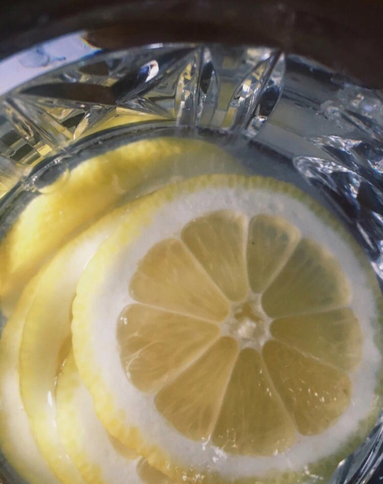

Must have daily skin care habits.
Sunscreen, Sunscreen, Sunscreen
Nothing ages the skin quite like sun damage. For skin that will stay beautiful as you mature, wear an SPF 40 sunscreen underneath your foundation every single day. Seriously, your foundation's sun protection isn't enough. You'd have to use an entire bottle to match the power of a stand-alone sunscreen—so use both.
Drink water
It's important to stay well hydrated all the time because that keeps your skin at its healthiest, Peredo said. "Skin is one of the last organs to receive the water you intake daily, so increasing how much you hydrate will ensure it receives the water necessary for skin cell formation, which helps keep the skin looking young."
Simple daily habits
- Make sure you wash your face twice daily. Invest in a good facial cleanser.
- Splash your face many times with plain cold water to prevent dirt and excess oiliness from settling on your face.
- For an extra boost, try taking a skin, hair and nails supplement to ensure you body is glowing from the inside out.
DIY water for clear skin
Cucumber, Lemon and Mint Water
- 12 cups of filtered water
- 1 medium organic cucumber
- to 3 small organic lemons
- 10 to 12 organic mint leaves
Strawberry Kiwi Detox Water
- 1 and a half gallons of cold water
- 2 Kiwis
- 6 Strawberries, sliced
Beautiful Skin Detox Water
- 1 to 2 liters of water
- 1 lemon
- 5 strawberries, sliced
- 1 apple, sliced
- Handful of fresh mint leaves
- 1 tsp of cinnamon
- Handful of ice
